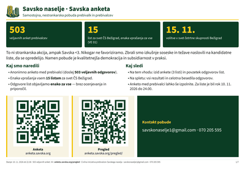
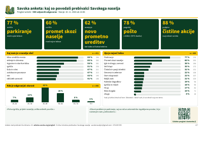
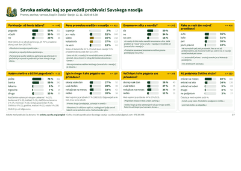
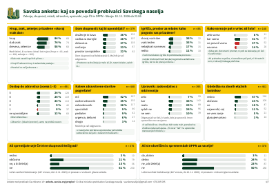
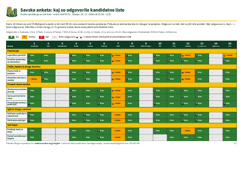
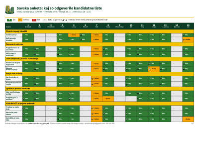
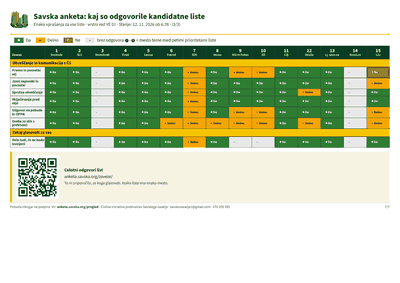

Pri tiskanju izberi A4, ležeče, merilo 100 % (ali »prilagodi strani«).
Lahko natisneš cel komplet ali samo strani, ki jih potrebuješ.
List lahko obesiš na vhod ali ga natisneš starejšim sosedom.
Posamezne strani







Vrstni red list je enak zaporednim številkam na glasovnici za volitve v svet Četrtne skupnosti Bežigrad (volilna enota 01), 15. 11. 2026.